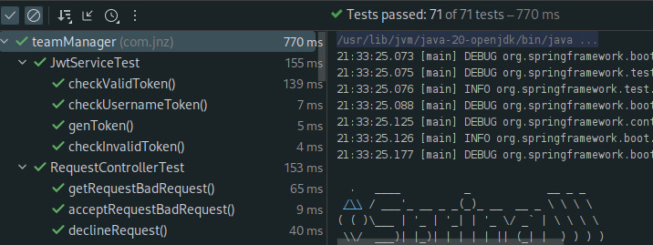

Pruebas
JwtServiceTest
checkValidToken()
Esta prueba verifica si un token es válido. Se asegura de que el servicio Jwt pueda validar correctamente un token y determinar si es válido o no.
checkUsernameToken()
Esta prueba comprueba si el servicio Jwt puede extraer correctamente el nombre de usuario del token. Verifica si el servicio puede obtener el nombre de usuario almacenado en el token.
genToken()
Esta prueba se encarga de verificar si el servicio Jwt puede generar un token correctamente. Asegura que el servicio pueda crear un token con los datos requeridos.
RequestControllerTest
getRequestBadRequest()
Esta prueba se enfoca en verificar el manejo de una solicitud de obtener datos cuando se proporcionan parámetros incorrectos o insuficientes. Comprueba si el controlador de solicitudes puede manejar adecuadamente una solicitud inválida y responder con un código de error correspondiente.
acceptRequestBadRequest()
Esta prueba se centra en probar el manejo de una solicitud de aceptación de una solicitud específica cuando se proporcionan datos incorrectos. Verifica si el controlador puede identificar y manejar adecuadamente una solicitud inválida y devolver un código de error apropiado.
declineRequest()
Esta prueba se encarga de verificar el manejo de una solicitud de rechazo de una solicitud específica. Asegura que el controlador pueda procesar correctamente la solicitud de rechazo y proporcionar una respuesta adecuada.
Implementacion
En esta imagen se puede ver como se ejecutan todas las pruebas que se describen anteriormente y el tiempo que toma cada una ademas del tiempo en que se hacen por seccion y en total